Home ·
Teaching ·
Supervision ·
Publications
Ricardo Ruiz Baier
School of Mathematics,
Monash University
Office 315, 9 Rainforest Walk
Melbourne, VIC 3800, Australia
E-mail: Ricardo.RuizBaier@monash.edu
Phone: +61 3 9905 4485
I am an Associate Professor in Computational Mathematics at Monash University, and an ARC Future Fellow.
I am also a member of the Victorian Heart Institute and of the Monash Data Futures Institute.
My research concentrates on the design and analysis of numerical methods for partial differential equations, focusing on
discretisations that preserve the main features of the underlying natural phenomena we aim to describe.
My areas of interest and expertise include fundamental topics in numerical analysis and scientific computing such as
- Analysis of finite volume and finite element methods using mixed and augmented formulations
- Space-time adaptivity and error estimation
- Perturbed saddle-point problems
- Multiphase flow and transport in porous media
- Cardiac electrophysiology and electromechanics
- Interface problems
NEWS
- 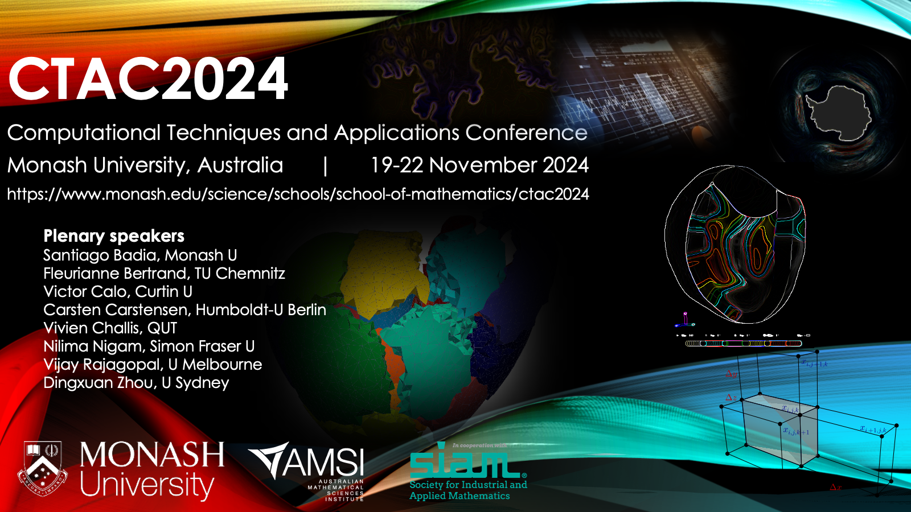 Upcoming: I am leading the organisation of the Computational Techniques and Applications Conference (CTAC 2024), to be held during November 19-22, 2024 at Monash University, Australia.
- 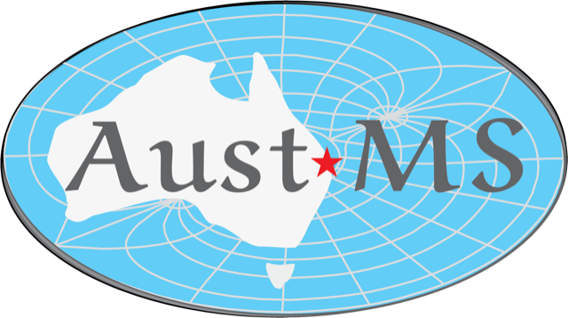 Upcoming: Together with Quoc Thong Le Gia and Bishnu Lamichhane we are organising the session on computational mathematics for the Joint Meeting of the New Zealand, Australian and American Mathematical Societies, to be held during December 9-13, 2024 at the University of Auckland, New Zealand.
 15 February, 2024: Dr Mathieu Barre has started in our group as postdoctoral research associate, funded by Monash Mathematics. Mathieu will be working on Analysis and discretisation of nonlinear multiphysics coupled problems. See more details here.
15 February, 2024: Dr Mathieu Barre has started in our group as postdoctoral research associate, funded by Monash Mathematics. Mathieu will be working on Analysis and discretisation of nonlinear multiphysics coupled problems. See more details here.
- 12-16 February, 2024: I've participated as plenary speaker in the ICERM Workshop on Numerical Analysis of Multiphysics Problems ICERM 2024, held at Brown University, USA.
- 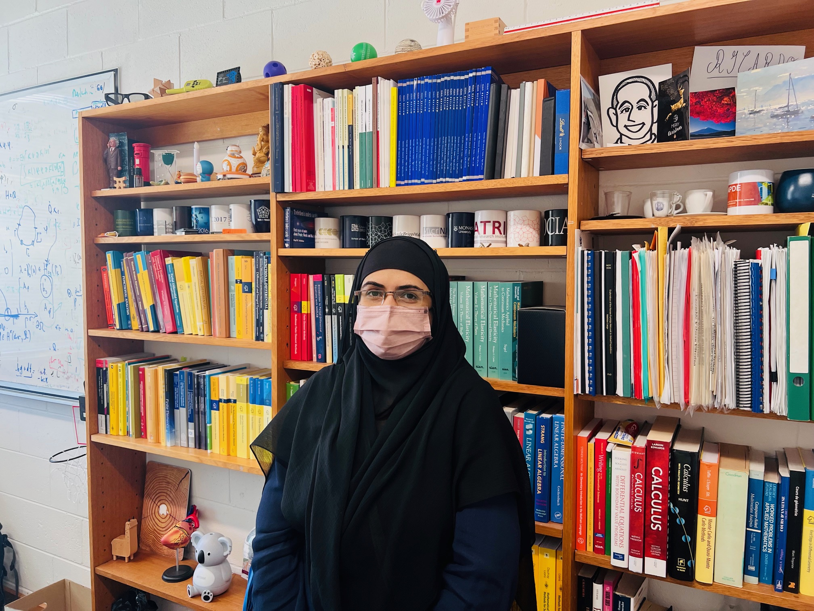 15 January, 2024: Dr Sadia Arshad has started in our group as postdoctoral research associate, funded by COMSATS University, Pakistan. Sadia will be working on New mixed formulations for poromechanics with fractional operators. See more details here.
- 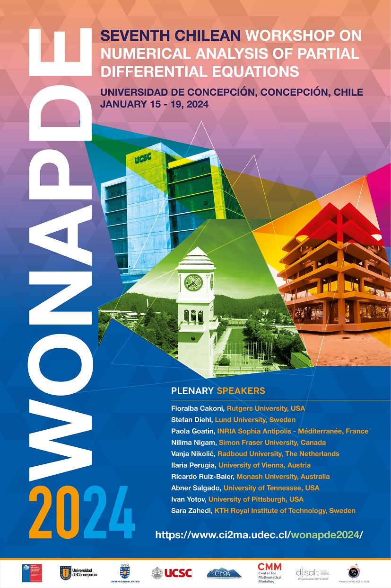 15-19 January, 2024: I've participated as plenary speaker in the Seventh Chilean Workshop on Numerical Analysis of Partial Differential Equations WONAPDE 2024, held at the University of Concepcion, Chile.
- 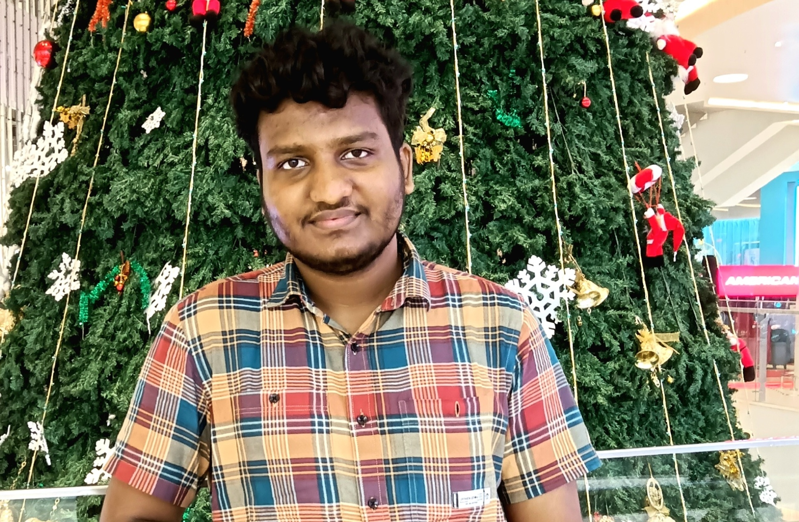 25 December, 2023: Siyad Rahman has started in our group as PhD student, funded by the IITB-Monash Doctoral Programme. He will be working on Theoretical and numerical analysis of multiphysics problems in thin structures.
- 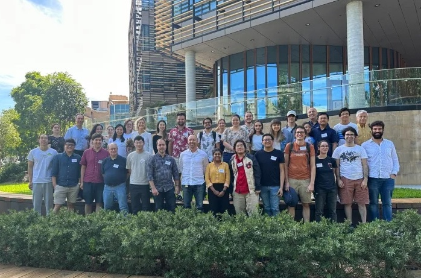 11-15 December, 2023: I've participated as plenary speaker in the Workshop on Optimisation, Metric Bounds, Approximation and Transversality -- biennial Workshop on the Intersections of Computation and Optimisation WOMBAT/WICO 2023, held at the University of Sydney, Australia.
- 5-8 December, 2023: Together with Quoc Thong Le Gia and Bishnu Lamichhane we have organised the session on computational mathematics for the 67th Annual Meeting of the Australian Mathematical Society, held at the University of Queensland, Brisbane, Australia.
- 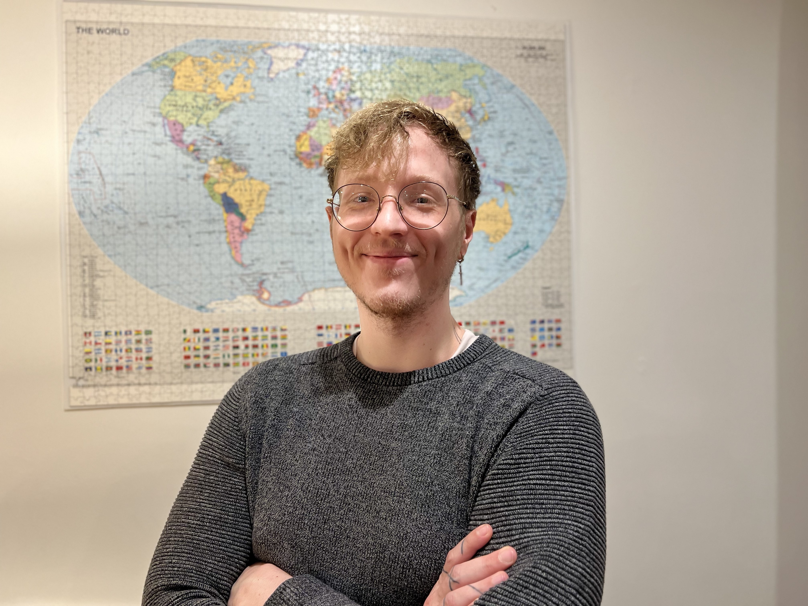 25 August, 2023: Russel Demos has started in our group as PhD student, funded by a central scholarship from the Australian Government. He will be working on Analysis of new formulations for nonlinearly coupled problems in continuum mechanics.
- 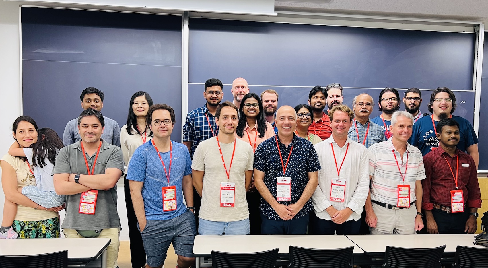 20-24 August, 2023: Together with Wietse Boon, Martin Hornkjøl, and Miroslav Kuchta we organised the minisymposium Robust formulations for coupled multiphysics problems – Theory and applications as part of the
10th International Congress on Industrial and Applied Mathematics ICIAM 2023, Tokyo, Japan.
- 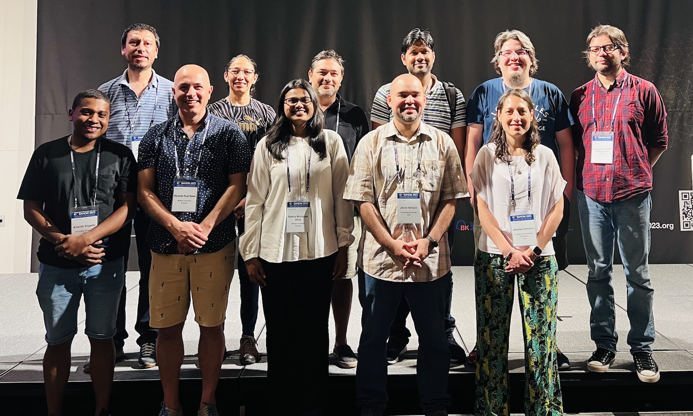 14-18 August, 2023: Together with David Mora we organised the minisymposium Numerical Methods for Problems in Continuum Mechanics and Related Applications as part of the
International Conference on Spectral and High Order Methods ICOSAHOM 2023, Seoul, Korea.
- 1 June, 2023: Russel Demos has completed his Honours thesis in our group, working on Analysis of rotation-based formulations for continuum mechanics. Congratulations!
- 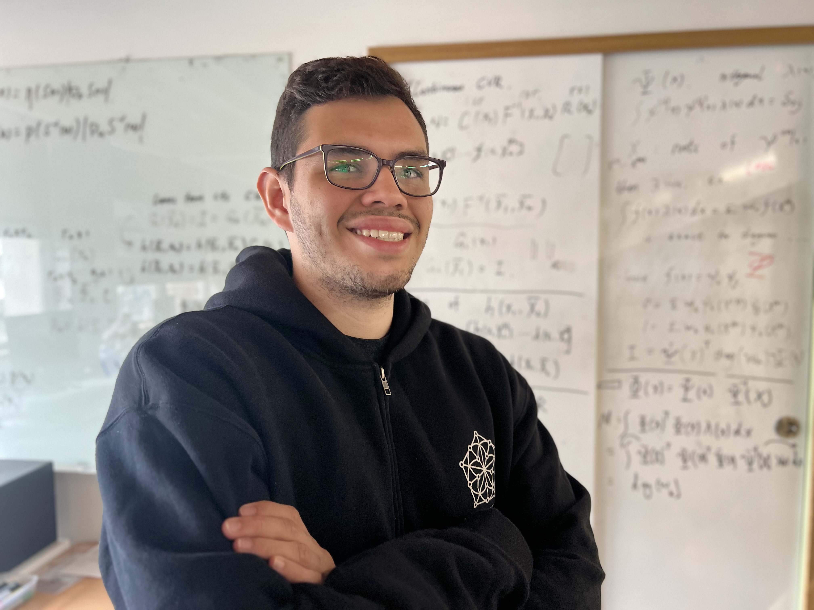 28 May, 2023: Andres E. Rubiano has started in our group as PhD student, funded by the Australian Research Council. Andres will be working on NAnalysis and novel discretisations for problems arising in large-strain poroelasticity.
- 1 March, 2023: I have been awarded the prestigious Future Fellowship FT22 by the Australian Research Council, to work during 4 years on Next-generation methods for transport in poroelastic media with interfaces. See further details here.
- 15 February, 2023: Dr Segundo Villa-Fuentes has started in our group as postdoctoral research associate, cofunded by the program Becas Chile from the Chilean Research Council, and by Monash Mathematics. Segundo will be working on New non-Hilbertian formulations for nonlinear problems in poromechanics. See more details here.
- 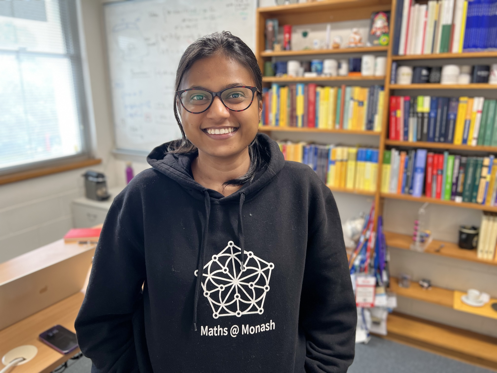 15 January, 2023: Dr Rekha Khot has started in our group as postdoctoral research associate, funded by Monash Mathematics. Rekha will be working on Polytopal discretisations for multiphysics couplings in slender domains. See more details here.
- 9-30 January, 2023: I have lectured a AMSI Summer School Course on Analysis of finite element methods for incompressible flow and for elasticity equations.
- 1 November, 2022: Together with Santiago Badia we are starting the Australian Research Council Discovery Project DP21 to work on Towards predictive 4D computational models for the heart. Partner institutions are University of Oxford and University of Oslo. See further details here.